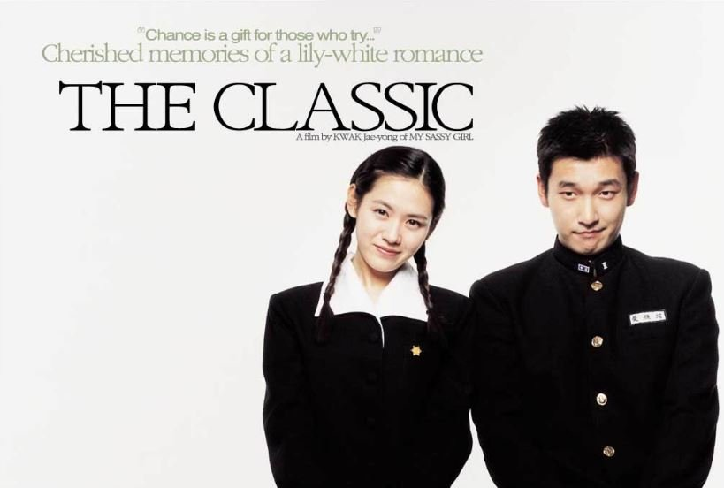

ABOUT THE WORK
《클래식》은 손예진, 조승우, 조인성이 주연을 맡은 곽재용 감독의 영화이다.
유영석이 작곡한〈사랑하면 할수록〉과 자전거 탄 풍경이 부른 〈너에게 난,
나에게 넌〉이 영화의 OST로 쓰였다. 손예진은 윤지혜의 어머니인 성주희와
지혜 역을 동시에 연기했다. 조승우는 어머니 성주희의 첫사랑 오준하를,
조인성은 딸 윤지혜의 첫사랑 오상민을 연기했다.
"우연히, 우연히, 우연히...
그러나...반드시"
같은 대학에 다니는 지혜(손예진)와
수경은 연극반 선배 상민(조인성)을
좋아한다. 하지만 호들갑스런 수경이
상민에게 보낼 편지의 대필을 부탁
하고, 지혜는 수경의 이름으로 상민을
향한 자신의 감정을 고백한다.
지혜의 편지로 맺어진 수경과 상민이
가까워지면서 지혜는 괘한 죄의식에
상민을 멀리 하려 하지만, 우연하게도
자꾸만 마주치게된다. 오래 전, 사랑은
이미 시작되었다.